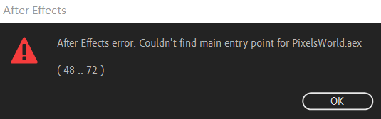

报错Couldn't find main entry point for PixelsWorld.aex (48::72)
如果您在首次测试/使用PixelsWorld时遇到下面错误提示时，请检查如下几项。

- 您需要通过Creative Cloud来把Ae更新至最新（对于CC2019推荐
16.1.3+对于2020推荐17.5.1+） - Windows10 需更新至最新版（推荐
Windows 10 20H2及以后的版本） - 您需要拥有最新的显卡驱动
- 您的显卡需要从硬件支持
OpenGL 3.3及以上版本的协议（可以使用OpenGL Extensions Viewer工具查看） C:\Windows\System32目录下需存在OpenCL.dll